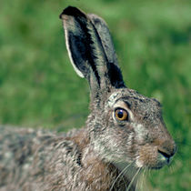

Obicni zec ili europski zec (Lepus europaeus) je vrsta zeca autohtona u Europi i zapadnoj Aziji. Nije glodavac vec dvojezubac prilagoden otvorenim krajevima umjerene klime. Slican je divljem kunicu koji je drugacijeg nacina života (od razmnožavanja do bijega vezan je uz jazbine koje sam kopa), dok zec nikad ne kopa rupe i u bijegu se oslanja samo na brzinu.[1] Zecevi su inace skrovite životinje, ali mijenjaju svoje ponašanje u proljece kad se okupljaju radi parenja. Opadanje populacije zeceva u kontinentalnoj Europi posljedica je izmedu ostalog i promjena u zemljoradnji.Manji zecevi jugozapadne Europe: Lepus corsicanus, Lepus granatensis, Lepus castroviejoi u novije vrijeme odvojeni su kao zasebne vrste.[2] Istraživanje genoma europskog zeca i kapskog zeca (Lepus capensis) ukazuju na njihovu ubrzanu evoluciju nakon ne tako davne geografske izolacije populacija. Kako bilo europski zec ostaje klasificiran kao vrsta dok nova istraživanja ne riješe njihov taksonomski status.
| Zec |
|---|
|  |